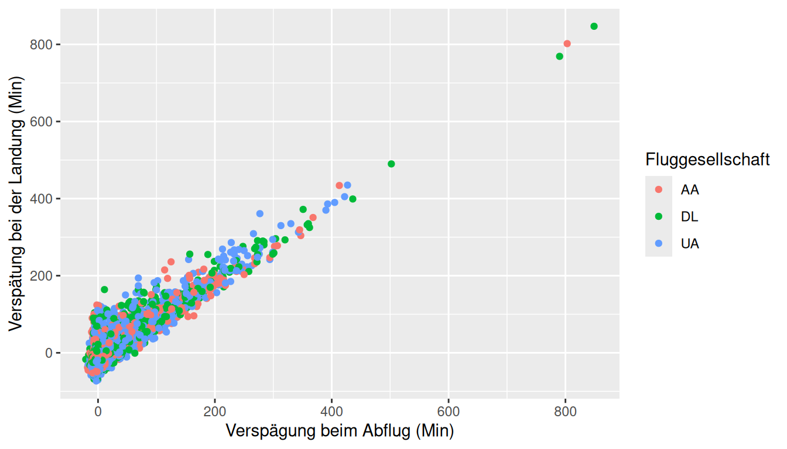

library(tidyverse)
library(openintro)6 Lab 02: Pünktlichkeit von Flügen
Das ist die deutsche Übersetzung des “OpenIntro Labs for R and tidyverse” 2. Intro to data. Es ist Teil des Buches von Çetinkaya-Rundel et al., Introduction to Modern Statistics, lizenziert unter CC-BY-SA 3.0. Übersetzt mit www.DeepL.com/Translator, bearbeitet und ergänzt von C. Bogner und L. Dedeke.
Manche definieren Statistik als das Gebiet, das sich darauf konzentriert, Informationen in Wissen zu verwandeln. Der erste Schritt in diesem Prozess ist die Zusammenfassung und Beschreibung der Rohinformationen - der Daten. In dieser Übung untersuchen wir Flüge, insbesondere eine Zufallsstichprobe von Inlandsflügen, die im Jahr 2013 von den drei großen Flughäfen in New York City abgeflogen sind. Wir werden einfache grafische und numerische Zusammenfassungen der Daten zu diesen Flügen erstellen und die Verspätungszeiten untersuchen. Da es sich um einen großen Datensatz handelt, werden Sie nebenbei auch die unverzichtbaren Fertigkeiten der Datenverarbeitung und -unterteilung erlernen.
6.1 Erste Schritte
6.1.1 Pakete laden
In dieser Übung werden wir die Daten mithilfe der Paketsammlung tidyverse untersuchen und visualisieren. Die Daten befinden sich im Begleitpaket für OpenIntro-Übungen, openintro.
Lassen Sie uns die Pakete laden.
6.1.2 Erstellen eines reproduzierbaren Berichts
Denken Sie daran, dass wir R Markdown verwenden werden, um reproduzierbare Berichte zu erstellen. Gehen Sie in RStudio zu New File -> R Markdown… Wählen Sie dann From Template und wählen Sie dann Lab Report for OpenIntro Statistics Labs aus der Liste der Vorlagen. Oder verfahren Sie so, wie wir es in den Übungen gelernt haben New File -> R Notebook… Beide Varianten sind in Ordnung. Wenn Sie die Variante mit R Markdown wählen, gibt es keinen Button “Preview”, sondern Sie müssen das Dokument “knitten” über den Button mit dem Wollknäuel.
Sehen Sie sich das folgende Video an, in dem beschrieben wird, wie Sie mit der Erstellung dieser Berichte für dieses und alle zukünftigen Labs beginnen können:
6.1.3 Die Daten
Das Bureau of Transportation Statistics (BTS) ist eine Statistikbehörde, die zur Research and Innovative Technology Administration (RITA) gehört. Wie der Name schon sagt, sammelt das BTS Verkehrsdaten und stellt sie zur Verfügung, wie z. B. die Flugdaten, mit denen wir in diesem Labor arbeiten werden.
Als Erstes werden wir uns den Datensatz nycflights ansehen. Geben Sie Folgendes in Ihre Konsole ein, um die Daten zu laden:
data(nycflights)Der Datensatz nycflights, der in Ihrem Arbeitsbereich angezeigt wird, ist eine Datenmatrix oder Datentabelle, wobei jede Zeile eine Beobachtung und jede Spalte eine Variable darstellt. In R wird dieses Datenformat als Dataframe bezeichnet, ein Begriff, der in den Übungen immer wieder verwendet wird. Bei diesem Datensatz ist jede Beobachtung ein einzelner Flug.
Um die Namen der Variablen anzuzeigen, geben Sie den Befehl
names(nycflights)Dies gibt die Namen der Variablen in diesem Datenrahmen zurück. Das Codebuch (Beschreibung der Variablen) kann über die Hilfedatei abgerufen werden:
?nycflightsEine der Variablen bezieht sich auf die Fluggesellschaft des Fluges, die nach folgendem System kodiert wird.
- carrier (Fluggesellschaft): Zweibuchstabiges Kürzel der Fluggesellschaft.
- 9E: Endeavor Air Inc.
- AA: American Airlines Inc.
- AS: Alaska Airlines Inc.
- B6: JetBlue Airways
- DL: Delta Air Lines Inc.
- EV: ExpressJet Fluggesellschaften Inc.
- F9: Frontier Airlines Inc.
- FL: AirTran Airways Corporation
- HA: Hawaiian Airlines Inc.
- MQ: Envoy Air
- OO: SkyWest Airlines Inc.
- UA: United Air Lines Inc.
- US: US Airways Inc.
- VX: Virgin America
- WN: Southwest Airlines Co.
- YV: Mesa Airlines Inc.
Denken Sie daran, dass Sie die Funktion glipmse() nutzen können, um einen Überblick über die Daten zu erhalten und somit deren Inhalt besser zu verstehen.
glimpse(nycflights)Der Datensatz nycflights ist eine riesige Fundgrube an Informationen. Lassen Sie uns über einige Fragen nachdenken, die wir mit diesen Daten beantworten wollen:
- Wie verspätet waren die Flüge nach Los Angeles?
- Wie unterscheiden sich die Abflugverspätungen je nach Monat?
- Welcher der drei großen Flughäfen in New York hat den besten Prozentsatz an pünktlichen Abflügen?
6.2 Analyse
6.2.1 Bericht
Um Ihre Analyse in einem reproduzierbaren Bericht festzuhalten, können Sie die allgemeine Vorlage für Berichte aus dem Paket openintro anpassen. Sehen Sie sich das Video oben an, um zu erfahren, wie das geht.
6.2.2 Abflugverspätungen
Beginnen wir damit, die Verteilung der Abflugverspätungen aller Flüge mit einem Histogramm zu untersuchen.
ggplot(data = nycflights, aes(x = dep_delay)) +
geom_histogram()Mit dieser Funktion wird die Variable dep_delay aus dem Dataframe nycflights auf der \(x\)-Achse dargestellt. Sie definiert auch ein geom (kurz für geometrisches Objekt), das die Art der Darstellung beschreibt, die Sie erzeugen werden.
Histogramme eignen sich im Allgemeinen sehr gut, um die Form der Verteilung einer einzelnen numerischen Variablen zu sehen, aber diese Form kann sich ändern, je nachdem, wie die Daten auf die verschiedenen Bins aufgeteilt sind. Sie können die zu verwendende Bin-Breite einfach festlegen:
ggplot(data = nycflights, aes(x = dep_delay)) +
geom_histogram(binwidth = 15)ggplot(data = nycflights, aes(x = dep_delay)) +
geom_histogram(binwidth = 150)- Schauen Sie sich diese drei Histogramme genau an. Wie lassen sie sich vergleichen? Sind in einem Histogramm Merkmale zu erkennen, die in einem anderen verdeckt sind?
Wenn Sie nur die Verspätungen von Flügen nach Los Angeles anzeigen möchten, müssen Sie zunächst die Daten nach Flügen mit diesem Ziel filter()n (dest == "LAX") und dann ein Histogramm der Abflugverspätungen nur dieser Flüge erstellen.
lax_flights <- nycflights %>%
filter(dest == "LAX")
ggplot(data = lax_flights, aes(x = dep_delay)) +
geom_histogram()Lassen Sie uns diese beiden Befehle entschlüsseln (OK, es sieht vielleicht nach vier Zeilen aus, aber die ersten beiden physischen Codezeilen sind tatsächlich Teil desselben Befehls. Es ist üblich, nach %>% einen Zeilenumbruch einzufügen, um die Lesbarkeit zu verbessern).
- Befehl 1: Nehmen Sie den Dataframe
nycflights,filter()n Sie nach Flügen zum LAX und speichern Sie das Ergebnis als neuen Datenrahmen namenslax_flights.- == bedeutet “wenn es gleich ist mit”.
- LAX steht in Anführungszeichen, da es sich um eine Zeichenkette handelt.
- Befehl 2: Im Grunde derselbe
ggplot-Aufruf wie bei der Erstellung eines Histogramms, nur dass hier das kleinere Dataframe für Flüge mit Ziel LAX anstelle aller Flüge verwendet wird.
Logische Operatoren: Das Filtern nach bestimmten Beobachtungen (z. B. Flüge von einem bestimmten Flughafen) ist in Dataframes oft von Interesse, wenn wir Beobachtungen mit bestimmten Merkmalsausprägungen getrennt vom Rest der Daten untersuchen möchten. Zu diesem Zweck können Sie die Filterfunktion und eine Reihe von logischen Operatoren verwenden. Die am häufigsten verwendeten logischen Operatoren für die Datenanalyse sind die folgenden:
==bedeutet “gleich”!=bedeutet “nicht gleich”>oder<bedeutet “größer als” oder “kleiner als”.>=oder<=bedeutet “größer als oder gleich” oder “kleiner als oder gleich”.
Sie können auch numerische Zusammenfassungen für diese Flüge erhalten:
lax_flights %>%
summarise(mean_dd = mean(dep_delay),
median_dd = median(dep_delay),
n = n())Beachten Sie, dass Sie in der Funktion summarise() eine Liste mit drei verschiedenen numerischen Zusammenfassungen erstellt haben, an denen Sie interessiert waren. Die Namen dieser Elemente sind benutzerdefiniert, wie mean_dd, median_dd, n, und Sie können diese Namen nach Belieben anpassen (verwenden Sie nur keine Leerzeichen in Ihren Namen). Für die Berechnung dieser zusammenfassenden Statistiken müssen Sie auch die Funktionsaufrufe kennen. Beachten Sie, dass n() den Stichprobenumfang angibt.
Zusammenfassende Statistiken aka statistische Lage- und Streumaße: Einige nützliche Funktionsaufrufe für zusammenfassende Statistiken für eine einzelne numerische Variable sind wie folgt:
- Mittelwert:
mean() - Median:
median() - Standardabweichung:
sd() - Varianz:
var() - Interquartilabstand:
IQR() - Kleinster Wert:
min() - Größter Wert:
max()
Beachten Sie, dass jede dieser Funktionen einen einzelnen Vektor als Argument annimmt und einen einzelnen Wert zurückgibt.
Sie können auch nach mehreren Kriterien filtern. Angenommen, Sie sind an Flügen nach San Francisco (SFO) im Februar interessiert:
sfo_feb_flights <- nycflights %>%
filter(dest == "SFO", month == 2)Beachten Sie, dass Sie die Bedingungen durch Kommas trennen können, wenn Sie Flüge sowohl nach SFO als auch im Februar suchen. Wenn Sie entweder an Flügen nach SFO oder an Flügen im Februar interessiert sind, können Sie das | anstelle des Kommas verwenden.
Erstellen Sie ein neues Dataframe, das Flüge nach SFO im Februar enthält, und speichern Sie diesen Datenrahmen als
sfo_feb_flights. Wie viele Flüge erfüllen diese Kriterien?Beschreiben Sie die Verteilung der Ankunftsverspätungen
arr_delaydieser Flüge anhand eines Histogramms und geeigneter zusammenfassender Statistiken. Tipp: Die von Ihnen verwendete zusammenfassende Statistik sollte von der Form der Verteilung abhängen.
Eine weitere nützliche Methode ist die schnelle Berechnung von zusammenfassenden Statistiken für verschiedene Gruppen in Ihrem Dataframe. Wir können den obigen Befehl etwa mit der Funktion group_by() modifizieren, um die gleiche zusammenfassende Statistik für jeden Herkunftsflughafen zu erhalten:
sfo_feb_flights %>%
group_by(origin) %>%
summarise(median_dd = median(dep_delay), iqr_dd = IQR(dep_delay), n_flights = n())Hier haben wir die Daten zunächst nach Herkunft gruppiert und dann die zusammenfassenden Statistiken berechnet.
- Berechnen Sie den Median und den Interquartilsabstand für
arr_delaysder Flüge im Datenrahmensfo_feb_flights, gruppiert nach Fluggesellschaft. Welche Fluggesellschaft hat Ankunftsverspätungen mit der größten Variabilität?
6.3 Abflugverspätungen nach Monaten
In welchem Monat würden Sie die höchste durchschnittliche Verspätung bei Abflügen von einem New Yorker Flughafen erwarten?
Lassen Sie uns überlegen, wie Sie diese Frage beantworten können:
- Berechnen Sie zunächst die monatlichen Durchschnittswerte für Abflugverspätungen. Mit der neuen Sprache, die Sie gerade lernen, könnten Sie
group_by()nach Monaten, dann- die durchschnittlichen Abflugverspätungen zusammenfassen mit
summarise().
- Dann könnten Sie diese durchschnittlichen Verspätungen in absteigender Reihenfolge mit
arrange()anordnen
nycflights %>%
group_by(month) %>%
summarise(mean_dd = mean(dep_delay)) %>%
arrange(desc(mean_dd))- Angenommen, Sie mögen keine Verspätungen bei der Abreise und möchten Ihre Reise in einem Monat planen, der Ihre mögliche Verspätung bei der Abreise aus New York minimiert. Eine Möglichkeit ist, den Monat mit der geringsten mittleren Abflugverspätung zu wählen. Eine andere Möglichkeit ist, den Monat mit der geringsten mittleren Abflugverspätung zu wählen. Was sind die Vor- und Nachteile dieser beiden Möglichkeiten?
6.3.1 Pünktliche Abflugrate für NYC-Flughäfen
Angenommen, Sie fliegen von New York City aus und möchten wissen, welcher der drei großen Flughäfen in New York City die beste Pünktlichkeitsrate bei abgehenden Flügen aufweist. Nehmen wir weiter an, dass für Sie ein Flug, der weniger als 5 Minuten Verspätung hat, grundsätzlich “pünktlich” (“on time”) ist. Sie betrachten jeden Flug, der mehr als 5 Minuten Verspätung hat, als “verspätet” (“delayed”).
Um festzustellen, welcher Flughafen die beste Pünktlichkeitsquote hat, können Sie
- zunächst jeden Flug als “on time” oder “delayed” einstufen,
- dann die Flüge nach Herkunftsflughafen gruppieren,
- dann die Rate der pünktlichen Abflüge für jeden Herkunftsflughafen berechnen,
- und schließlich die Flughäfen in absteigender Reihenfolge nach dem Prozentsatz der pünktlichen Abflüge ordnen.
Beginnen wir mit der Klassifizierung der einzelnen Flüge als “on time” oder “delayed”, indem wir mit der Funktion mutate() eine neue Variable erstellen.
nycflights <- nycflights %>%
mutate(dep_type = ifelse(dep_delay < 5, "on time", "delayed"))Das erste Argument in der Funktion mutate() ist der Name der neuen Variable, die wir erstellen wollen, in diesem Fall dep_type. Wenn dep_delay < 5 ist, klassifizieren wir den Flug als “on time”, wenn nicht, als “delayed”, d. h. wenn der Flug 5 oder mehr Minuten verspätet ist.
Beachten Sie, dass wir auch das Dataframe nycflights mit der neuen Version dieses Dataframes überschreiben, der die neue Variable dep_type enthält.
Alle übrigen Schritte können wir in einem einzigen Code-Chunk erledigen:
nycflights %>%
group_by(origin) %>%
summarise(ot_dep_rate = sum(dep_type == "on time") / n()) %>%
arrange(desc(ot_dep_rate))- Wenn Sie einen Flughafen nur aufgrund des prozentualen Anteils der Abflüge in der Zeit auswählen würden, welchen Flughafen in NYC würden Sie dann wählen?
Sie können auch die Verteilung der pünktlichen Abflugrate auf die drei Flughäfen mithilfe eines Balkendiagramms visualisieren.
ggplot(data = nycflights, aes(x = origin, fill = dep_type)) +
geom_bar()6.4 Weitere Übungen
Ändern Sie das Dataframe so, dass es eine neue Variable enthält, die die Durchschnittsgeschwindigkeit,
avg_speed, die das Flugzeug bei jedem Flug zurückgelegt hat (in mph), angibt. Tipp: Die Durchschnittsgeschwindigkeit kann als Entfernung geteilt durch die Anzahl der Flugstunden berechnet werden, und beachten Sie, dass die Flugzeitair_timein Minuten angegeben wird.Erstellen Sie ein Streudiagramm von der Durchschnittsgeschwindigkeit
avg_speedund Entfernungdistance. Beschreiben Sie die Beziehung zwischen Durchschnittsgeschwindigkeit und Entfernung. Tipp: Verwenden Siegeom_point().Bauen Sie die folgende Darstellung nach. Tipp: Das dargestellte Dataframe enthält nur Flüge von American Airlines, Delta Airlines und United Airlines, und die Punkte sind nach Fluggesellschaft
carriereingefärbt (colored). Ermitteln Sie nach dem Plotten (grob) den Grenzwert für Abflugverspätungen, bei dem Sie noch erwarten können, Ihr Ziel rechtzeitig zu erreichen.
